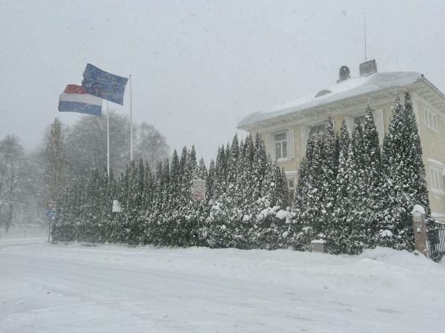
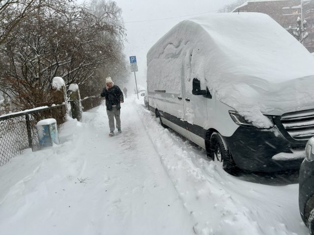

January 17, 2024
Airports closed, bus service was cancelled all over the Norwegian capital and train service was shut down around much of Southern Norway on Wednesday, when blizzards dumped more snow than clearing crews could handle. Strong winds added to the problems.
The latest winter storms hit the West Coast first this week, setting off massive problems for public transport and closing airports first in Bergen and then in Stavanger. By Wednesday morning, heavy snow was falling again on the southern coast from Kristiansand in the west to Fredrikstad and Sarpsborg in the southeast. And then Oslo was hit hard, where the wind was blowing so hard that flags outside the Dutch ambassador’s residence were fully unfurled.
